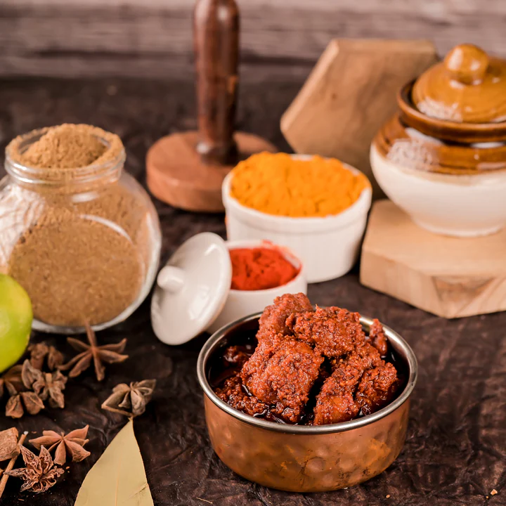
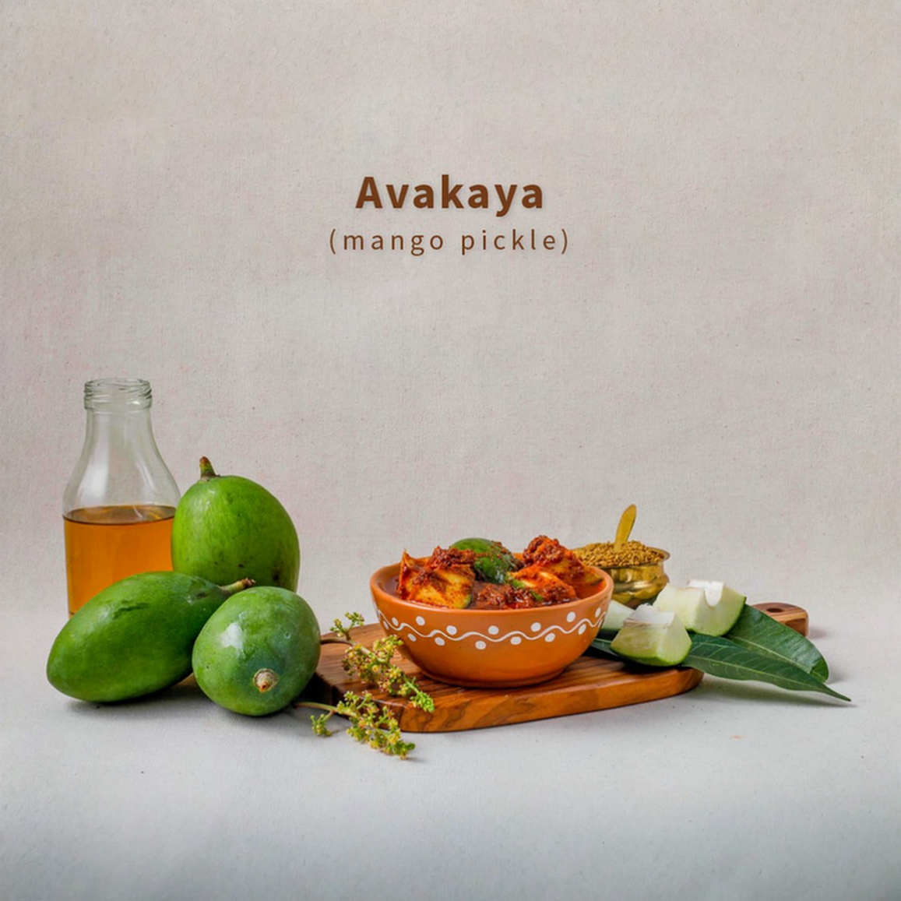
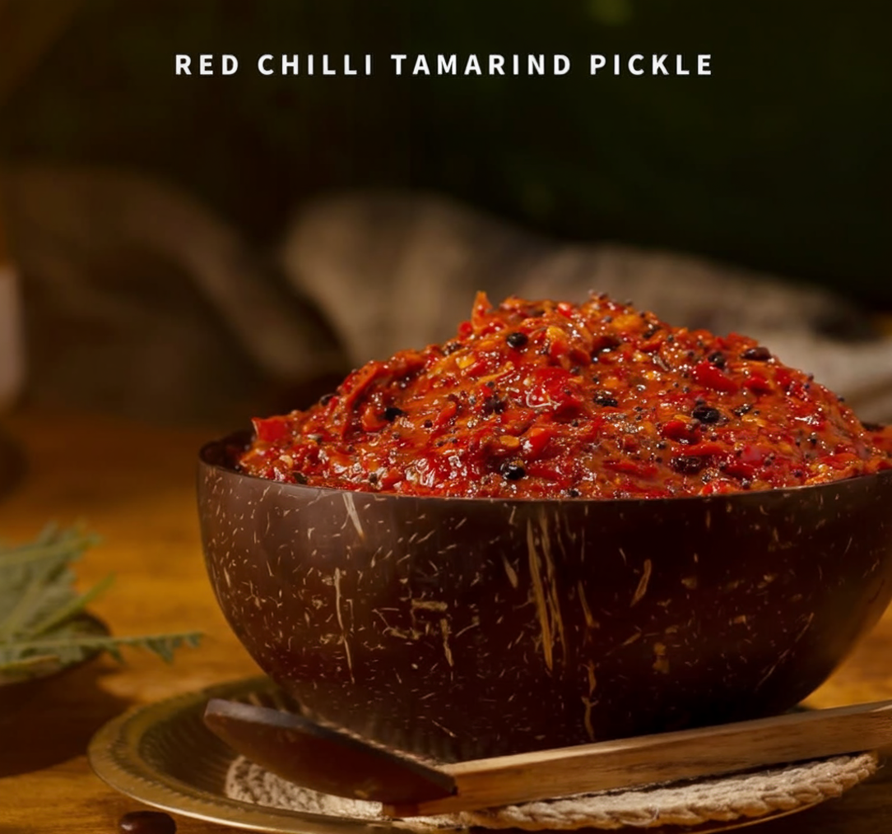
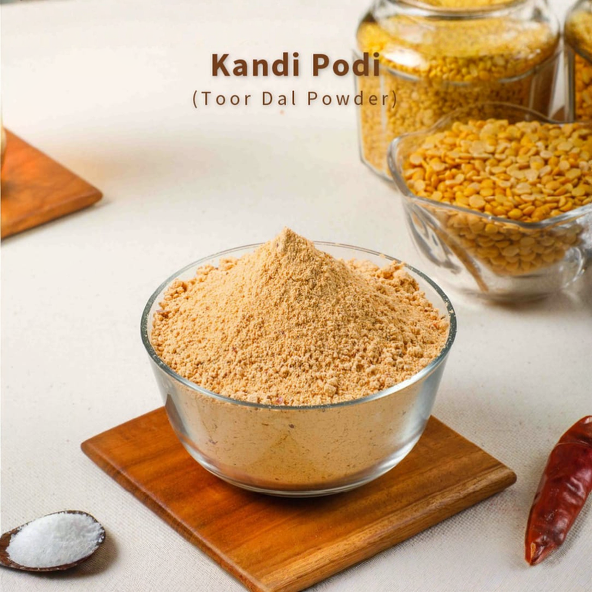
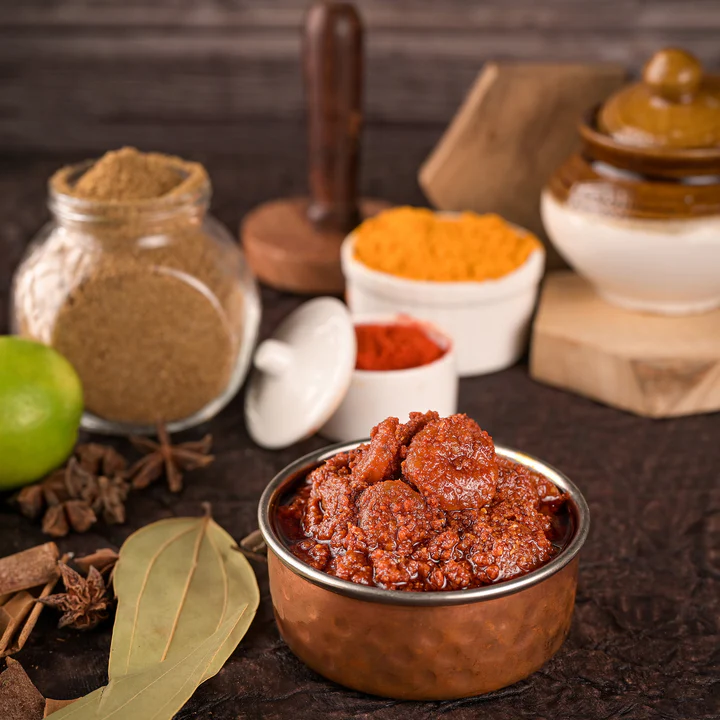

<title>Made The Way She Made It</title>
<meta name="robots" content="noindex, nofollow">
<link rel="stylesheet" href="https://fonts.googleapis.com/css2?family=Bitter:wght@500;700;800&family=Karla:ital,wght@0,400;0,500;0,700;1,400&display=swap">
<style>
:root{
  --wood:#2A1D14; --wood-deep:#1C130D;
  --linen:#EDE6D9; --paper:#FCFAF5;
  --chilli:#A8341C; --chilli-bright:#E0633F;
  --turmeric:#D9A020; --turmeric-soft:#EFC873;
  --ink:#241A12; --warm:#7C7062; --warm-lt:#CDC1B0;
  --disp:"Bitter",Georgia,"Times New Roman",serif;
  --body:"Karla",-apple-system,"Segoe UI",Helvetica,Arial,sans-serif;
}
*{box-sizing:border-box}
body{margin:0;background:var(--paper);color:var(--ink);font-family:var(--body);
  font-size:16px;line-height:1.62;-webkit-font-smoothing:antialiased}
img{max-width:100%;display:block}

.band{padding-block:clamp(52px,6.5vw,92px)}
.wrap{max-width:1060px;margin:0 auto;padding-inline:clamp(20px,4vw,48px)}
.dark{background:var(--wood);color:var(--linen)}
.deep{background:var(--wood-deep);color:var(--linen)}
.linen{background:var(--linen);color:var(--ink)}

h1,h2{font-family:var(--disp);text-wrap:balance;margin:0;letter-spacing:-.018em}
h1{font-size:clamp(2.4rem,6.2vw,4.4rem);line-height:1.02;font-weight:800}
h2{font-size:clamp(1.7rem,3.3vw,2.5rem);line-height:1.12;font-weight:700}
h3{font-family:var(--disp);font-weight:700;font-size:1.1rem;line-height:1.36;margin:0;
  letter-spacing:-.005em;text-wrap:balance}
h4{font-family:var(--body);font-weight:700;font-size:.95rem;margin:0;letter-spacing:.015em}
p{margin:0}
.lede{font-size:clamp(1.06rem,1.7vw,1.24rem);line-height:1.58;max-width:60ch}
.label{font-size:.67rem;font-weight:700;letter-spacing:.19em;text-transform:uppercase;
  color:var(--chilli)}
.dark .label,.deep .label{color:var(--turmeric)}
.quiet{color:var(--warm)}
.dark .quiet,.deep .quiet{color:var(--warm-lt)}

/* hero */
.hero{position:relative;background:var(--wood-deep);color:var(--linen);overflow:hidden}
.hero-img{position:absolute;inset:0}
.hero-img img{width:100%;height:100%;object-fit:cover;opacity:.4}
.hero-img::after{content:"";position:absolute;inset:0;
  background:linear-gradient(105deg,rgba(28,19,13,.95) 0%,rgba(28,19,13,.85) 48%,rgba(28,19,13,.45) 100%)}
.hero .wrap{position:relative;padding-block:clamp(50px,7.5vw,100px);
  display:flex;flex-direction:column;gap:clamp(20px,3vw,32px)}
.brandmark{font-family:var(--disp);font-weight:800;font-size:1.12rem;letter-spacing:.07em}
.brandmark span{display:block;font-family:var(--body);font-weight:400;font-size:.62rem;
  letter-spacing:.23em;text-transform:uppercase;color:var(--turmeric);margin-top:5px}
.hero-claim{font-family:var(--disp);font-weight:500;font-size:clamp(1.1rem,2.1vw,1.42rem);
  line-height:1.4;max-width:32ch}
.hero-claim b{color:var(--turmeric-soft);font-weight:700}
.meta{display:flex;flex-wrap:wrap;gap:7px 26px;font-size:.78rem;letter-spacing:.05em}

/* spec rows */
.spec{display:grid;grid-template-columns:minmax(0,146px) minmax(0,1fr);
  gap:clamp(16px,3vw,48px);align-items:start}
.spec + .spec{margin-top:clamp(32px,4vw,52px);padding-top:clamp(32px,4vw,52px);
  border-top:1px solid color-mix(in srgb,currentColor 18%,transparent)}
.stack{display:flex;flex-direction:column;gap:17px}
.sub{display:flex;flex-direction:column;gap:11px;margin-top:9px}

/* diagnostic */
.diag{border:1px solid color-mix(in srgb,var(--turmeric) 45%,transparent);border-radius:3px;
  overflow:hidden;margin-top:5px}
.diag-hd,.diag-r{display:grid;grid-template-columns:minmax(0,1fr) 88px 88px}
.diag-hd{background:color-mix(in srgb,var(--turmeric) 16%,transparent)}
.diag-hd span{padding:10px 14px;font-size:.62rem;font-weight:700;letter-spacing:.13em;
  text-transform:uppercase;color:var(--chilli)}
.diag-hd span+span,.diag-r span+span{text-align:right}
.diag-r{align-items:center;border-top:1px solid color-mix(in srgb,var(--turmeric) 26%,transparent)}
.diag-r span{padding:12px 14px;font-size:.9rem;line-height:1.35}
.diag-r .now{font-family:var(--disp);font-weight:800;font-variant-numeric:tabular-nums;
  color:var(--chilli)}
.diag-r .fix{font-family:var(--disp);font-weight:800;font-variant-numeric:tabular-nums;
  color:#4C6B2F}

/* 70/30 */
.split{display:grid;grid-template-columns:7fr 3fr;
  border:1px solid color-mix(in srgb,var(--turmeric) 50%,transparent);border-radius:3px;
  overflow:hidden;margin-block:22px}
.split>div{padding:19px 21px;display:flex;flex-direction:column;gap:6px}
.split>div:first-child{background:color-mix(in srgb,var(--turmeric) 17%,transparent)}
.split>div+div{border-left:1px solid color-mix(in srgb,var(--turmeric) 50%,transparent)}
.split .pct{font-family:var(--disp);font-size:2.25rem;line-height:1;font-weight:800}
.split .nm{font-size:.83rem;line-height:1.4}

/* deliverables */
.deliv{list-style:none;margin:0;padding:0}
.deliv li{display:flex;justify-content:space-between;align-items:baseline;gap:20px;
  padding:12px 0;border-bottom:1px solid color-mix(in srgb,currentColor 16%,transparent)}
.deliv li:first-child{border-top:1px solid color-mix(in srgb,currentColor 16%,transparent)}
.deliv .n{font-family:var(--disp);font-weight:800;font-size:1.35rem;line-height:1;
  font-variant-numeric:tabular-nums;color:var(--turmeric);white-space:nowrap}
.linen .deliv .n{color:var(--chilli)}

.acts{list-style:none;margin:0;padding:0;display:grid;gap:10px}
.acts li{display:grid;grid-template-columns:13px 1fr;gap:12px;font-size:.94rem;line-height:1.52}
.acts li::before{content:"";width:5px;height:5px;margin-top:.56em;border-radius:1px;
  background:var(--turmeric);transform:rotate(45deg)}
.linen .acts li::before,body>section:not(.dark):not(.deep):not(.linen) .acts li::before{
  background:var(--chilli)}
.dark .acts li::before,.deep .acts li::before{background:var(--turmeric)}

/* jars */
.jars{display:grid;grid-template-columns:repeat(auto-fit,minmax(min(100%,158px),1fr));
  gap:clamp(12px,2vw,18px)}
.jars figure{margin:0;display:flex;flex-direction:column;gap:9px}
.jars img{border-radius:2px;aspect-ratio:1;object-fit:cover;
  border:1px solid color-mix(in srgb,var(--turmeric) 32%,transparent)}
.jars figcaption{font-size:.78rem;line-height:1.4;color:var(--warm-lt)}
.jars .pr{font-variant-numeric:tabular-nums;color:var(--turmeric-soft)}

/* arc */
.arc{list-style:none;margin:0;padding:0}
.arc li{display:grid;grid-template-columns:minmax(0,52px) minmax(0,1fr);gap:18px;padding:15px 0;
  border-top:1px solid color-mix(in srgb,currentColor 18%,transparent)}
.arc li:last-child{border-bottom:1px solid color-mix(in srgb,currentColor 18%,transparent)}
.arc li.peak{background:color-mix(in srgb,var(--chilli) 20%,transparent);
  margin-inline:-14px;padding-inline:14px;border-radius:2px}
.arc .mo{font-family:var(--disp);font-weight:700;font-size:.92rem;color:var(--turmeric)}
.arc p{font-size:.89rem;margin-top:3px}
.flag{display:inline-block;font-family:var(--body);font-size:.6rem;font-weight:700;
  letter-spacing:.12em;text-transform:uppercase;color:var(--wood-deep);
  background:var(--turmeric);padding:2px 7px;border-radius:2px;margin-left:8px;vertical-align:2px}

/* tables */
.scroll{overflow-x:auto;-webkit-overflow-scrolling:touch}
.tbl{width:100%;border-collapse:collapse;font-size:.89rem;min-width:420px}
.tbl th,.tbl td{text-align:left;padding:11px 13px;vertical-align:top;
  border-bottom:1px solid color-mix(in srgb,currentColor 16%,transparent)}
.tbl thead th{font-size:.63rem;letter-spacing:.14em;text-transform:uppercase;font-weight:700;
  color:var(--chilli);border-bottom:1px solid var(--chilli);white-space:nowrap}
.dark .tbl thead th,.deep .tbl thead th{color:var(--turmeric);border-bottom-color:var(--turmeric)}
.tbl td.num,.tbl th.num{text-align:right;font-variant-numeric:tabular-nums;white-space:nowrap}
.tbl td.svc{font-weight:700;white-space:nowrap}
.tbl tr.total td{font-weight:700;border-top:2px solid var(--chilli);
  background:color-mix(in srgb,var(--chilli) 10%,transparent)}
.tbl tr.sub td{color:var(--warm)}
.dark .tbl tr.sub td,.deep .tbl tr.sub td{color:var(--warm-lt)}
.tbl tfoot td{vertical-align:middle}
.tbl tfoot .ftl{text-align:right;font-weight:700;white-space:nowrap}
.calc{margin:0;max-width:370px;display:grid}
.calc>div{display:flex;justify-content:space-between;align-items:baseline;gap:18px;
  padding:8px 0;border-bottom:1px solid color-mix(in srgb,currentColor 16%,transparent)}
.calc>div.eq{border-bottom:0;border-top:2px solid var(--chilli);padding-top:10px}
.calc dt,.calc dd{margin:0;font-size:.88rem}
.calc dd{font-variant-numeric:tabular-nums;font-weight:700;white-space:nowrap}
.calc>div.eq dt,.calc>div.eq dd{font-weight:700}
.tbl .bu{font-size:.82rem;line-height:1.45;min-width:230px}

.levels{display:grid;grid-template-columns:repeat(auto-fit,minmax(min(100%,205px),1fr));
  gap:13px;margin-top:22px}
.levels div{padding:19px;border:1px solid color-mix(in srgb,currentColor 22%,transparent);
  border-radius:3px}
.levels div.pick{border:2px solid var(--chilli);
  background:color-mix(in srgb,var(--chilli) 8%,transparent)}
.levels .amt{font-family:var(--disp);font-weight:800;font-size:1.66rem;line-height:1.08;
  margin-top:8px;font-variant-numeric:tabular-nums}
.levels .cap{font-size:.8rem;margin-top:6px;line-height:1.45}

.callout{padding:17px 19px;border-left:3px solid var(--chilli);
  background:color-mix(in srgb,var(--chilli) 7%,transparent);font-size:.9rem;line-height:1.55}
.dark .callout,.deep .callout{border-left-color:var(--turmeric);
  background:color-mix(in srgb,var(--turmeric) 12%,transparent)}

.close{display:grid;gap:22px}
.sign{font-family:var(--disp);font-weight:700;font-size:clamp(1.5rem,3vw,2.15rem);
  line-height:1.2;max-width:28ch}
.foot{font-size:.76rem;letter-spacing:.09em;text-transform:uppercase;color:var(--warm-lt)}

@media (max-width:560px){
  .spec{grid-template-columns:1fr;gap:11px}
  .split{grid-template-columns:1fr}
  .split>div+div{border-left:0;
    border-top:1px solid color-mix(in srgb,var(--turmeric) 50%,transparent)}
  .diag-hd,.diag-r{grid-template-columns:minmax(0,1fr) 66px 66px}
  .diag-r span{padding:10px;font-size:.84rem}
}
@media (prefers-reduced-motion:reduce){*{animation:none!important;transition:none!important}}
@page{size:A4;margin:0}
@media print{
  *{-webkit-print-color-adjust:exact!important;print-color-adjust:exact!important}
  html,body{background:var(--paper)}
  .wrap{max-width:none;padding-inline:17mm}
  .band{padding-block:15mm}
  .hero .wrap{padding-block:30mm 24mm}
  .hero{break-after:page}
  .spec,.split,.diag,.calc,.levels,.deliv,.callout{break-inside:avoid}
  .jars figure,.arc li,.acts li{break-inside:avoid}
  h1,h2,h3,h4,.label{break-after:avoid}
  .scroll{overflow:visible}
  .tbl{min-width:0}
  .tbl thead{display:table-header-group}
  .tbl tr{break-inside:avoid}
  a{color:inherit;text-decoration:none}
}
</style>

<header class="hero">
  <div class="hero-img">
    
  </div>
  <div class="wrap">
    <p class="brandmark">MOM MADE<span>Made with love, just like home</span></p>
    <h1>Made the way<br>she made it</h1>
    <p class="hero-claim">Hand-ground spices. Cold-pressed oils. No preservatives.
      <b>Differences you can show &mdash; not claims you have to argue.</b></p>
    <p class="meta quiet">
      <span>Content &amp; Growth Proposal</span>
      <span>Six-month engagement</span>
      <span>Prepared 20 September 2026</span>
    </p>
  </div>
</header>

<section class="band">
  <div class="wrap">
    <div class="spec">
      <p class="label">What we see</p>
      <div class="stack">
        <h2>The product is ready. The shop is what is holding it back.</h2>
        <p class="lede">You have a story most food brands can only claim, and customers verify it on
          the first bite. Three things are holding the brand back, and all three are fixable.</p>
        <p class="lede quiet">Most product pages carry no description and no reviews, so attention
          arriving there does not convert. The website cannot be found on Google at all. And the
          sweets and savouries range has never been marketed into the festivals that actually sell it.</p>

        <div class="diag">
          <div class="diag-hd"><span>Read from your catalogue, 18 Sep 2026</span>
            <span>Today</span><span>Month 1</span></div>
          <div class="diag-r"><span>Products with a written description</span>
            <span class="now">3 / 54</span><span class="fix">54</span></div>
          <div class="diag-r"><span>Products with a customer review</span>
            <span class="now">0 / 54</span><span class="fix">30+</span></div>
          <div class="diag-r"><span>Products with more than one image</span>
            <span class="now">34 / 54</span><span class="fix">54</span></div>
          <div class="diag-r"><span>Pages Google can index</span>
            <span class="now">0</span><span class="fix">~70</span></div>
          <div class="diag-r"><span>Bundles and gift hampers live</span>
            <span class="now">0</span><span class="fix">6</span></div>
        </div>
        <p class="quiet" style="font-size:.88rem">Nobody spends &#8377;950 on food from an
          unfamiliar brand with a bare product name and one photo. Fixing this first makes every
          rupee spent afterwards worth more &mdash; and almost none of it needs a budget.</p>
      </div>
    </div>
    <div class="spec">
      <p class="label">The measure</p>
      <div class="stack">
        <h3>We ask to be judged on repeat purchase at ninety days.</h3>
        <p>Pickles, podis and karam powders are consumables. A household that likes Mom Made
          reorders every six to twelve weeks for years, and the second order costs almost nothing to
          win. A food brand that acquires without retaining buys customers once and loses money
          doing it.</p>
      </div>
    </div>
  </div>
</section>

<section class="band dark">
  <div class="wrap">
    <div class="spec">
      <p class="label">How it is made</p>
      <div class="stack">
        <h2>Two fixed stations in your kitchen. One day a month.</h2>
        <p class="lede">We build two filming setups and leave them documented: one corner where you
          talk to camera, and one overhead rig above a work surface for grinding, pouring and mixing.
          One day a month through both produces the bulk of your content.</p>
        <div class="split">
          <div><span class="pct">70%</span><span class="nm"><strong>Capture day, packing and proof
            footage, motion from stills.</strong> No models, no hair and makeup, no location hire.
            Your kitchen is the set.</span></div>
          <div><span class="pct">30%</span><span class="nm"><strong>Recipe, styling and festive
            shoots.</strong> Needs a stylist and ingredients &mdash; and supplies the footage
            everything else is cut against.</span></div>
        </div>
        <p class="quiet" style="font-size:.9rem">The process station is shot silent with clean
          audio. Stone on spice, oil pouring, a jar sealing &mdash; that sound is the whole appeal,
          and it cannot be recovered afterwards.</p>
      </div>
    </div>
    <div class="spec">
      <p class="label">Every month</p>
      <div class="stack">
        <ul class="deliv">
          <li><span>Hero reels</span><span class="n">16</span></li>
          <li><span>Motion assets animated from catalogue stills</span><span class="n">8&ndash;10</span></li>
          <li><span>Carousels and static posts</span><span class="n">12</span></li>
          <li><span>Story frames</span><span class="n">120+</span></li>
          <li><span>Blog articles, from month three</span><span class="n">2&ndash;3</span></li>
          <li><span>WhatsApp broadcasts to past buyers</span><span class="n">4</span></li>
          <li><span>Reels in Telugu and English</span><span class="n">2</span></li>
          <li><span>Performance report and planning meeting</span><span class="n">1</span></li>
        </ul>
        <p class="quiet" style="font-size:.9rem">Food content has a real advantage: the engine needs
          no models, no hair and makeup and no location hire, so a weekly cadence costs far less than
          it would for most brands.</p>
      </div>
    </div>
    <div class="spec">
      <p class="label">Your range</p>
      <div class="stack">
        <h3>Fifty-four products across six categories, &#8377;270 to &#8377;2,200.</h3>
        <p class="quiet" style="font-size:.91rem">Ten hero products carry the plan. The rest stay
          listed, but content does not chase all fifty-four.</p>
        <div class="jars">
          <figure>
            <figcaption>Avakaya <span class="pr">&#8377;275&ndash;950</span></figcaption></figure>
          <figure>
            <figcaption>Pandu mirchi <span class="pr">&#8377;275&ndash;950</span></figcaption></figure>
          <figure>
            <figcaption>Kandi podi <span class="pr">&#8377;270</span></figcaption></figure>
          <figure>
            <figcaption>Prawns <span class="pr">&#8377;1,100&ndash;2,200</span></figcaption></figure>
        </div>
      </div>
    </div>
  </div>
</section>

<section class="band linen">
  <div class="wrap">
    <div class="spec">
      <p class="label">Weeks one &amp; two</p>
      <div class="stack">
        <h2>Fix the shop first.</h2>
        <ul class="acts">
          <li>Write descriptions for all 54 products, starting with the ten that sell</li>
          <li>Run a review drive across past customers by WhatsApp; target 30 reviews in month one</li>
          <li>Add shelf life and storage guidance to every product page</li>
          <li>Choose ten hero products on margin and demand, and focus the plan on them</li>
          <li>Build four bundles and two festive hampers to lift average order value</li>
          <li>Brief your developer on server rendering, a sitemap and Search Console, so Google can see the site</li>
          <li>Set up the post-purchase WhatsApp flow that requests reviews and prompts reorders</li>
          <li>Rebuild the Instagram profile and claim the Google Business Profile</li>
          <li>Record the baseline: sessions, conversion rate, orders, average order value, repeat rate</li>
        </ul>
      </div>
    </div>
    <div class="spec">
      <p class="label">From week three</p>
      <div class="stack">
        <h3>The engine runs.</h3>
        <ul class="acts">
          <li>One capture day a month across two fixed stations in your kitchen</li>
          <li>A recipe and styling shoot in alternate months</li>
          <li>A festive shoot before Diwali and before Sankranti</li>
          <li>A one-off catalogue shoot covering every product, reused all year</li>
          <li>Four reels, two carousels and daily stories every week</li>
          <li>Two WhatsApp broadcasts a month to past and prospective customers</li>
          <li>Two to three blog articles a month from month 3, written from the founder&rsquo;s transcripts</li>
          <li>One food creator collaboration a week</li>
          <li>Monthly report and planning meeting in the first week of every month</li>
        </ul>
      </div>
    </div>
  </div>
</section>

<section class="band deep">
  <div class="wrap">
    <div class="spec">
      <p class="label">The six months</p>
      <div class="stack">
        <h2>Everything aims at one month.</h2>
        <ol class="arc">
          <li><span class="mo">One</span><div><h4>Foundations</h4>
            <p>Fix the catalogue, build the engine, publish into Diwali.</p></div></li>
          <li><span class="mo">Two</span><div><h4>Reach</h4>
            <p>Food creator collaborations, motion pipeline, first paid tests.</p></div></li>
          <li><span class="mo">Three</span><div><h4>Search</h4>
            <p>Blog live, recipe series, pre-Sankranti build begins in late December.</p></div></li>
          <li class="peak"><span class="mo">Four</span><div><h4>Sankranti<span class="flag">Peak</span></h4>
            <p>Seventeen products in your sweets and savouries range have never recorded a sale
              &mdash; and they are precisely the Sankranti products.</p></div></li>
          <li><span class="mo">Five</span><div><h4>Retention</h4>
            <p>Refill reminders, a subscription test, the review engine at scale.</p></div></li>
          <li><span class="mo">Six</span><div><h4>Expansion</h4>
            <p>Ugadi, Avakaya pre-season, and the results review.</p></div></li>
        </ol>
        <p class="quiet" style="font-size:.9rem">Those categories have not failed. They were listed
          outside the festivals that sell them and never marketed into one.</p>
      </div>
    </div>
  </div>
</section>

<section class="band">
  <div class="wrap">
    <div class="spec">
      <p class="label">The retainer</p>
      <div class="stack">
        <h2>&#8377;60,000 a month. Six months. &#8377;3,60,000 in fees.</h2>
        <div class="scroll">
          <table class="tbl">
            <thead><tr><th>Service</th><th>What it means in practice</th></tr></thead>
            <tbody>
              <tr><td class="svc">Brand growth strategy</td><td>Positioning, content strategy, monthly growth priorities, platform plan</td></tr>
              <tr><td class="svc">Shoot planning</td><td>Concepts, scripts, question sets, shot lists, call sheets, scheduling</td></tr>
              <tr><td class="svc">Production supervision</td><td>We direct every shoot and manage the hired crew on your behalf</td></tr>
              <tr><td class="svc">Organic content output</td><td>All editing, captions, thumbnails, scheduling and publishing</td></tr>
              <tr><td class="svc">Output control</td><td>Quality review before anything publishes; brand consistency across every asset</td></tr>
              <tr><td class="svc">Monthly performance report</td><td>One-page scorecard against baseline, what worked, what changes next month</td></tr>
            </tbody>
          </table>
        </div>
        <div class="callout">
          <strong>Not included, and billed separately:</strong> hired crew and equipment, food
          styling, hand models, ingredients, props and consumables &mdash; set out below at cost,
          with a 12% coordination fee for booking, negotiating and managing them.<br><br>
          <strong>Also not included:</strong> paid advertising spend, which stays on your own account
          so you control it directly, and any website or development work.
        </div>
      </div>
    </div>

    <div class="spec">
      <p class="label">Rate card</p>
      <div class="stack">
        <p>Food production is materially cheaper than most categories, because there are no models,
          no hair and makeup and no location hire. Your kitchen is the set.</p>
        <div class="scroll">
          <table class="tbl">
            <thead><tr><th>Item</th><th>Unit</th><th class="num">Estimate</th></tr></thead>
            <tbody>
              <tr><td>Cameraman / operator</td><td>Full day</td><td class="num">&#8377;8,000</td></tr>
              <tr><td>Camera body and lenses</td><td>Full day</td><td class="num">&#8377;3,500</td></tr>
              <tr><td>Second camera and overhead rig</td><td>Full day</td><td class="num">&#8377;2,000</td></tr>
              <tr><td>Lighting kit</td><td>Full day</td><td class="num">&#8377;3,000</td></tr>
              <tr><td>Audio kit, lapel and recorder</td><td>Full day</td><td class="num">&#8377;1,000</td></tr>
              <tr><td>Camera assistant</td><td>Full day</td><td class="num">&#8377;2,000</td></tr>
              <tr><td>Food stylist</td><td>Full day</td><td class="num">&#8377;7,000</td></tr>
              <tr><td>Hand model</td><td>Full day</td><td class="num">&#8377;4,000</td></tr>
              <tr><td>Stills and catalogue specialist</td><td>Full day</td><td class="num">&#8377;10,000</td></tr>
              <tr><td>Ingredients and consumables</td><td>Per shoot</td><td class="num">&#8377;4,000</td></tr>
              <tr><td>Props, surfaces and backgrounds</td><td>Per shoot</td><td class="num">&#8377;4,000&ndash;6,000</td></tr>
              <tr><td>Hamper materials and festive props</td><td>Per shoot</td><td class="num">&#8377;6,000</td></tr>
              <tr><td>Transport and logistics</td><td>Per day</td><td class="num">&#8377;1,000&ndash;2,000</td></tr>
            </tbody>
          </table>
        </div>
        <div class="callout"><strong>A note on models.</strong> Mom Made needs almost none. A hand
          model at &#8377;4,000 covers most food work, against the &#8377;12,000 a fashion model
          commands. This is the main reason your production budget is roughly a third lower than a
          comparable apparel brand&rsquo;s.</div>
        <p class="quiet" style="font-size:.86rem">All production figures are conservative Hyderabad
          market estimates as at September 2026, intended for budgeting. We bring you actual quotes
          before booking anything, and you approve each shoot budget in advance.</p>
      </div>
    </div>

    <div class="spec">
      <p class="label">Shoot types</p>
      <div class="stack">
        <h3>What each shoot type costs.</h3>
        <div class="scroll">
          <table class="tbl">
            <thead><tr><th>Shoot type</th><th>Build-up</th><th class="num">Total</th></tr></thead>
            <tbody>
              <tr><td class="svc">Capture day, two stations</td><td class="bu">Operator 8,000 + gear 9,500 + transport 1,000</td><td class="num">&#8377;18,500</td></tr>
              <tr><td class="svc">Recipe and styling day</td><td class="bu">Crew 8,000 + gear 7,500 + stylist 7,000 + hand model 4,000 + ingredients 4,000 + props 4,000 + transport 1,500</td><td class="num">&#8377;32,000</td></tr>
              <tr><td class="svc">Festive and hamper day</td><td class="bu">Crew 8,000 + gear 6,500 + stylist 7,000 + hamper materials 6,000 + transport 1,500</td><td class="num">&#8377;29,000</td></tr>
              <tr><td class="svc">Catalogue shoot, two days</td><td class="bu">Specialist 20,000 + gear 12,000 + props 6,000 + assistant 4,000 + transport 2,000 &mdash; one-off</td><td class="num">&#8377;44,000</td></tr>
            </tbody>
          </table>
        </div>
      </div>
    </div>

    <div class="spec">
      <p class="label">Six-month total</p>
      <div class="stack">
        <h3>Production schedule at the recommended level.</h3>
        <div class="scroll">
          <table class="tbl">
            <thead><tr><th>Month</th><th>Shoots</th><th class="num">Production</th>
              <th class="num">Fee</th><th class="num">Month total</th></tr></thead>
            <tbody>
              <tr><td>1</td><td>Capture + catalogue + Diwali festive</td><td class="num">&#8377;91,500</td><td class="num">&#8377;60,000</td><td class="num">&#8377;1,62,480</td></tr>
              <tr><td>2</td><td>Capture + recipe</td><td class="num">&#8377;50,500</td><td class="num">&#8377;60,000</td><td class="num">&#8377;1,16,560</td></tr>
              <tr><td>3</td><td>Capture + recipe</td><td class="num">&#8377;50,500</td><td class="num">&#8377;60,000</td><td class="num">&#8377;1,16,560</td></tr>
              <tr><td>4</td><td>Capture + Sankranti festive</td><td class="num">&#8377;47,500</td><td class="num">&#8377;60,000</td><td class="num">&#8377;1,13,200</td></tr>
              <tr><td>5</td><td>Capture + recipe</td><td class="num">&#8377;50,500</td><td class="num">&#8377;60,000</td><td class="num">&#8377;1,16,560</td></tr>
              <tr><td>6</td><td>Capture</td><td class="num">&#8377;18,500</td><td class="num">&#8377;60,000</td><td class="num">&#8377;80,720</td></tr>
            </tbody>
            <tfoot>
              <tr class="total"><td class="ftl" colspan="2">Six-month total</td>
                <td class="num">&#8377;3,46,080</td><td class="num">&#8377;3,60,000</td>
                <td class="num">&#8377;7,06,080</td></tr>
            </tfoot>
          </table>
        </div>
        <dl class="calc">
          <div><dt>Subtotal production</dt><dd>&#8377;3,09,000</dd></div>
          <div><dt>Coordination at 12%</dt><dd>&#8377;37,080</dd></div>
          <div class="eq"><dt>Production total</dt><dd>&#8377;3,46,080</dd></div>
        </dl>
        <p class="quiet" style="font-size:.88rem">Average monthly commitment across the six months:
          approximately &#8377;1,17,700. Month one is the heaviest, because the catalogue shoot falls
          there &mdash; if that is awkward, we can split it across months one and two at no extra
          cost.</p>

        <div class="sub">
          <h4>Three budget levels</h4>
          <div class="levels">
            <div><p class="label">Lean</p><p class="amt">&#8377;6,34,400</p>
              <p class="cap">One recipe day; catalogue and both festive shoots kept. Production
                &#8377;2,74,400.</p></div>
            <div class="pick"><p class="label">Recommended</p><p class="amt">&#8377;7,06,080</p>
              <p class="cap">Three recipe days and two festive shoots. Production
                &#8377;3,46,080.</p></div>
            <div><p class="label">Peak</p><p class="amt">&#8377;7,74,400</p>
              <p class="cap">Four recipe days and three festive shoots. Production
                &#8377;4,14,400.</p></div>
          </div>
          <p class="quiet" style="font-size:.88rem">We would not recommend cutting the catalogue
            shoot or either festive shoot at any level. The catalogue shoot fixes product pages that
            currently cannot convert and then supplies assets all year, and the two festive shoots
            sit in front of the only two large revenue events in your calendar.</p>
        </div>
      </div>
    </div>

    <div class="spec">
      <p class="label">Terms</p>
      <div class="stack">
        <div class="scroll">
          <table class="tbl">
            <thead><tr><th>Item</th><th>Terms</th></tr></thead>
            <tbody>
              <tr><td class="svc">Fee</td><td>&#8377;60,000 per month, payable in advance</td></tr>
              <tr><td class="svc">Term</td><td>Six months, then 30 days&rsquo; notice</td></tr>
              <tr><td class="svc">Production costs</td><td>At cost plus 12% coordination; advance collected before each shoot month</td></tr>
              <tr><td class="svc">Revisions</td><td>Two rounds per asset, then billable</td></tr>
              <tr><td class="svc">Approvals</td><td>48-hour approval window; the approved calendar publishes on schedule</td></tr>
              <tr><td class="svc">Ownership</td><td>All content becomes yours on payment; we retain portfolio and case-study rights</td></tr>
              <tr><td class="svc">Founder availability</td><td>One on-camera half-day per month, committed in advance</td></tr>
              <tr><td class="svc">Out of scope</td><td>Developer work, packaging design, logistics and export documentation</td></tr>
            </tbody>
          </table>
        </div>
      </div>
    </div>

    <div class="spec">
      <p class="label">From you</p>
      <div class="stack">
        <h3>Seven things, and the first two matter most.</h3>
        <ul class="acts">
          <li>One half-day a month with the founder on camera, calendared three months ahead. Seventy
            per cent of the content depends on it.</li>
          <li>Two areas of the kitchen we can dress and use repeatedly: one for talking, one overhead
            work surface for process.</li>
          <li>Your real sales figures, including WhatsApp and offline orders, and margin per product
            so we pick the right ten to push.</li>
          <li>A developer, or acceptance of our brief, for server rendering and a sitemap in week one.</li>
          <li>Your past customer list with consent to contact, for the review drive.</li>
          <li>Production lead times and capacity for festive sweets, so we never sell what cannot be
            made.</li>
          <li>FSSAI details and shelf-life documentation for any claim we make on camera.</li>
        </ul>
      </div>
    </div>
  </div>
</section>

<footer class="band dark">
  <div class="wrap close">
    <p class="label">Next steps</p>
    <p class="sign">Confirm a level, and we start on the catalogue the same week.</p>
    <ul class="acts" style="max-width:56ch">
      <li>Confirm the budget level: Lean, Recommended or Peak</li>
      <li>Sign the engagement and settle month one&rsquo;s fee and production advance</li>
      <li>Send us the sales data, the customer list and the developer contact</li>
      <li>Book the positioning session and the first capture day</li>
    </ul>
    <p class="foot">Six-month engagement &middot; Content ownership transfers on payment</p>
  </div>
</footer>
